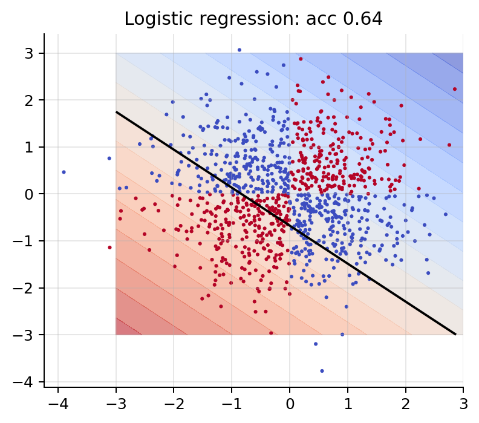
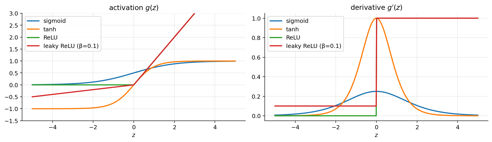
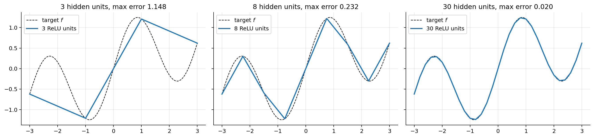
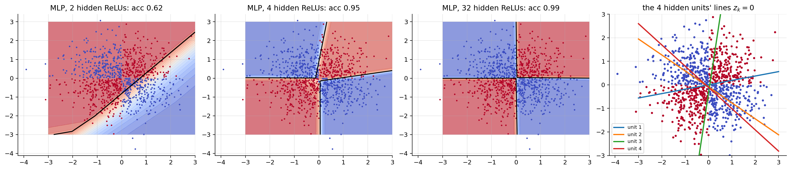
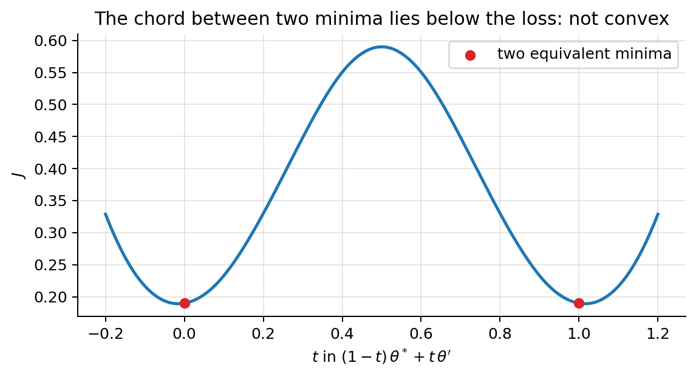

import numpy as np
import matplotlib.pyplot as plt
plt.rcParams.update({"figure.dpi": 90, "axes.grid": True, "grid.alpha": 0.3,
"axes.spines.top": False, "axes.spines.right": False})
rng = np.random.default_rng(0)00 · Neural Networks: from Logistic Regression to the MLP
A neural network is a stack of logistic-regression-like units whose features are learned instead of hand-designed. This notebook builds the model and its forward pass; notebook 01 shows how to train it (backpropagation).
Notation (same as the ML notes)
| Symbol | Meaning |
|---|---|
| \(m\), \(n\) | number of examples, number of input features |
| \(\mathbf{x}^{(i)}\), \(y^{(i)}\) | \(i\)-th input and target; \(\mathbf{X}\in\mathbb{R}^{m\times n}\) stacks the inputs as rows |
| \(L\) | number of layers (hidden + output); \(n_l\) = number of units in layer \(l\), \(n_0 = n\) |
| \(\mathbf{W}^{[l]}\in\mathbb{R}^{n_{l-1}\times n_l}\), \(\mathbf{b}^{[l]}\in\mathbb{R}^{1\times n_l}\) | weights and bias of layer \(l\) |
| \(\boldsymbol{\theta} = \{\mathbf{W}^{[l]}, \mathbf{b}^{[l]}\}_{l=1}^L\) | all parameters of the network |
| \(\mathbf{Z}^{[l]}, \mathbf{A}^{[l]}\) | pre-activation and activation of layer \(l\) (one row per example); \(\mathbf{A}^{[0]} = \mathbf{X}\) |
| \(g^{[l]}\) | activation function of layer \(l\) (applied element-wise) |
| \(J(\boldsymbol{\theta})\) | loss, \(\alpha\) learning rate |
Unlike the ML notes, the bias is kept as a separate vector \(\mathbf{b}\) instead of a column of ones in \(\mathbf{X}\). This is the convention of every deep learning library.
1. One neuron = logistic regression
A neuron computes a weighted sum of its inputs plus a bias, then applies an activation function \(g\):
\[ a = g(z), \qquad z = \mathbf{x}^\top\mathbf{w} + b = \sum_{j=1}^n w_jx_j + b . \]
With \(g = \sigma\) (sigmoid) and the cross-entropy loss, a single neuron is logistic regression (ML notes 02): \(\mathbf{w}\) plays the role of \((\theta_1,\dots,\theta_n)\) and \(b\) of \(\theta_0\). With \(g\) = identity and squared loss it is linear regression. Its decision boundary \(\mathbf{x}^\top\mathbf{w} + b = 0\) is a hyperplane.
2. The limit of linear models: XOR
Four points with labels \(y = \mathbb{1}[x_1x_2 > 0]\):
| \(x_1\) | \(x_2\) | \(y\) |
|---|---|---|
| \(+1\) | \(+1\) | 1 |
| \(-1\) | \(-1\) | 1 |
| \(+1\) | \(-1\) | 0 |
| \(-1\) | \(+1\) | 0 |
Claim. No linear classifier \(\hat{y} = \mathbb{1}[w_1x_1 + w_2x_2 + b > 0]\) gets all four right.
Proof. The two positive points need \(b + w_1 + w_2 > 0\) and \(b - w_1 - w_2 > 0\). Adding them gives \(2b > 0\). The two negative points need \(b + w_1 - w_2 \le 0\) and \(b - w_1 + w_2 \le 0\). Adding them gives \(2b \le 0\). Contradiction. \(\blacksquare\)
Logistic regression on XOR-like data therefore stays near 50 % accuracy, however long it trains.
from sklearn.linear_model import LogisticRegression
m = 1000
X = rng.normal(size=(m, 2)); y = (X[:, 0] * X[:, 1] > 0).astype(int)
g1, g2 = np.meshgrid(np.linspace(-3, 3, 300), np.linspace(-3, 3, 300)); G = np.c_[g1.ravel(), g2.ravel()]
def plot_boundary(ax, predict_proba, title):
P = predict_proba(G).reshape(g1.shape)
ax.contourf(g1, g2, P, levels=20, cmap="coolwarm", alpha=0.6); ax.contour(g1, g2, P, levels=[0.5], colors="k")
ax.scatter(X[:, 0], X[:, 1], c=y, cmap="coolwarm", s=6, edgecolor="none"); ax.set_title(title)
lr = LogisticRegression().fit(X, y)
fig, ax = plt.subplots(figsize=(4.5, 4))
plot_boundary(ax, lambda A: lr.predict_proba(A)[:, 1], f"Logistic regression: acc {lr.score(X, y):.2f}")
plt.tight_layout(); plt.show()
4. The multilayer perceptron (MLP)
An MLP (fully connected feed-forward network) stacks \(L\) layers. Forward propagation, for the whole batch at once:
\[ \mathbf{A}^{[0]} = \mathbf{X}, \qquad \mathbf{Z}^{[l]} = \mathbf{A}^{[l-1]}\mathbf{W}^{[l]} + \mathbf{b}^{[l]}, \qquad \mathbf{A}^{[l]} = g^{[l]}\big(\mathbf{Z}^{[l]}\big), \qquad l = 1,\dots,L, \]
and the prediction is \(\hat{\mathbf{Y}} = \mathbf{A}^{[L]}\). (The bias row \(\mathbf{b}^{[l]}\) is added to every row: “broadcasting”.)
Shapes: \(\mathbf{A}^{[l-1]}\) is \(m\times n_{l-1}\), \(\mathbf{W}^{[l]}\) is \(n_{l-1}\times n_l\), so \(\mathbf{Z}^{[l]}\) and \(\mathbf{A}^{[l]}\) are \(m\times n_l\). Checking shapes is the fastest way to debug a network.
Number of parameters: \(\sum_{l=1}^L (n_{l-1}n_l + n_l) = \sum_l (n_{l-1}+1)\,n_l\). Example: a 784 → 128 → 10 network (Fashion-MNIST lab) has \(785\cdot128 + 129\cdot10 = 101{,}770\) parameters.
The network is just a composed function \(h_{\boldsymbol{\theta}}(\mathbf{x}) = g^{[L]}\big(\cdots g^{[1]}(\mathbf{x}^\top\mathbf{W}^{[1]} + \mathbf{b}^{[1]})\cdots\big)\).
def init_params(sizes, rng):
"""sizes = [n0, n1, ..., nL]; small random weights, zero biases."""
return [(rng.normal(0, np.sqrt(2 / a), (a, b)), np.zeros((1, b))) for a, b in zip(sizes[:-1], sizes[1:])]
def forward(X, params, g_hidden, g_out):
A = X
for l, (W, b) in enumerate(params):
Z = A @ W + b
A = g_out(Z) if l == len(params) - 1 else g_hidden(Z)
return A
sigmoid = lambda z: 1 / (1 + np.exp(-z))
params = init_params([2, 16, 16, 1], rng)
for l, (W, b) in enumerate(params, 1):
print(f"layer {l}: W {W.shape}, b {b.shape}")
print("parameters:", sum(W.size + b.size for W, b in params))
print("output for 3 inputs (random, untrained net):", forward(X[:3], params, relu, sigmoid).ravel().round(3))layer 1: W (2, 16), b (1, 16)
layer 2: W (16, 16), b (1, 16)
layer 3: W (16, 1), b (1, 1)
parameters: 337
output for 3 inputs (random, untrained net): [0.504 0.473 0.652]5. Why the activation must be non-linear
Claim. Without non-linear activations, any number of layers collapses to a single linear layer.
Proof. With \(g\) = identity, \(\mathbf{A}^{[2]} = (\mathbf{X}\mathbf{W}^{[1]} + \mathbf{b}^{[1]})\mathbf{W}^{[2]} + \mathbf{b}^{[2]} = \mathbf{X}\underbrace{\mathbf{W}^{[1]}\mathbf{W}^{[2]}}_{\mathbf{W}'} + \underbrace{\mathbf{b}^{[1]}\mathbf{W}^{[2]} + \mathbf{b}^{[2]}}_{\mathbf{b}'}\), which is one affine layer. By induction the same holds for \(L\) layers. \(\blacksquare\)
So a deep linear network is no more expressive than linear regression. The non-linearity is what gives depth its power.
6. Activation functions
| Name | \(g(z)\) | \(g'(z)\) | Notes |
|---|---|---|---|
| Sigmoid | \(\sigma(z) = \frac{1}{1+e^{-z}}\) | \(\sigma(z)(1-\sigma(z)) \le \frac14\) | output layer for binary tasks; saturates → vanishing gradients in hidden layers |
| tanh | \(\frac{e^z - e^{-z}}{e^z + e^{-z}} = 2\sigma(2z) - 1\) | \(1 - \tanh^2(z) \le 1\) | zero-centred; still saturates; used in RNNs |
| ReLU | \(\max(0, z)\) | \(\mathbb{1}[z > 0]\) | default for hidden layers: cheap, no saturation for \(z>0\); units can “die” (always \(z<0\)) |
| Leaky ReLU | \(\max(\beta z, z)\), \(\beta\approx0.01\) | \(1\) or \(\beta\) | never fully dead |
| GELU | \(z\,\Phi(z)\) | smooth | used in transformers |
Proof that \(\tanh(z) = 2\sigma(2z) - 1\): \(2\sigma(2z) - 1 = \frac{2}{1+e^{-2z}} - 1 = \frac{1-e^{-2z}}{1+e^{-2z}}\); multiply numerator and denominator by \(e^z\) to get \(\frac{e^z - e^{-z}}{e^z + e^{-z}}\).
Saturation. Where the curve is flat (\(|z|\) large for sigmoid/tanh), \(g'(z)\approx0\). In backpropagation every layer multiplies the gradient by \(g'\) (notebook 01), so flat regions stop learning. ReLU’s derivative is exactly 1 for \(z>0\).
z = np.linspace(-5, 5, 500)
acts = {"sigmoid": (sigmoid(z), sigmoid(z) * (1 - sigmoid(z))),
"tanh": (np.tanh(z), 1 - np.tanh(z) ** 2),
"ReLU": (relu(z), (z > 0).astype(float)),
"leaky ReLU (β=0.1)": (np.maximum(0.1 * z, z), np.where(z > 0, 1, 0.1))}
fig, axes = plt.subplots(1, 2, figsize=(12, 3.6))
for name, (f, d) in acts.items():
axes[0].plot(z, f, lw=2, label=name); axes[1].plot(z, d, lw=2, label=name)
axes[0].set_title("activation $g(z)$"); axes[1].set_title("derivative $g'(z)$"); axes[0].set_ylim(-1.5, 3)
for ax in axes: ax.legend(); ax.set_xlabel("$z$")
plt.tight_layout(); plt.show()
7. Output layer + loss = maximum likelihood
The hidden layers are generic. The output layer and loss are chosen by the task, with exactly the reasoning of the ML notes: pick a distribution for \(y\) given the network’s output, and minimise the negative log-likelihood.
| Task | Output layer \(g^{[L]}\) | Distribution of \(y\mid\mathbf{x}\) | Loss \(J(\boldsymbol{\theta})\) | PyTorch |
|---|---|---|---|---|
| Regression | identity | Gaussian | MSE \(\frac{1}{m}\sum(\hat{y}-y)^2\) | MSELoss |
| Binary classification | sigmoid, 1 unit | Bernoulli | binary cross-entropy | BCEWithLogitsLoss |
| \(K\) classes | softmax, \(K\) units | categorical | categorical cross-entropy | CrossEntropyLoss |
| \(K\) independent labels (multi-label) | \(K\) sigmoids | \(K\) Bernoullis | sum of BCEs | BCEWithLogitsLoss |
The derivations are ML notes 01 (Gaussian → MSE), 02 (Bernoulli → BCE) and 04 (categorical → cross-entropy). A neural network is simply linear/logistic/softmax regression on learned features \(\mathbf{A}^{[L-1]}\).
Work with logits. Libraries take the pre-activation \(z\) (the logit) and fuse the sigmoid/softmax into the loss, because it is numerically stable. For BCE with \(p = \sigma(z)\): \[
-\big[y\log\sigma(z) + (1-y)\log(1-\sigma(z))\big] = \log(1+e^{z}) - yz = \max(z, 0) - yz + \log\big(1 + e^{-|z|}\big),
\] and the last form never overflows. (Proof of the first equality: \(\log\sigma(z) = -\log(1+e^{-z})\) and \(\log(1-\sigma(z)) = -z - \log(1+e^{-z})\), so the bracket is \(-\log(1+e^{-z}) - (1-y)z\), and \(\log(1+e^{-z}) + z = \log(1+e^{z})\).) The same applies to softmax: CrossEntropyLoss takes raw logits; NLLLoss needs log_softmax first.
8. Universal approximation (a constructive picture)
Theorem (Cybenko 1989; Hornik 1991; Leshno et al. 1993). A network with one hidden layer and any non-polynomial activation can approximate any continuous function on a bounded domain to any accuracy, given enough hidden units.
Why, for ReLU in 1D. A one-hidden-layer ReLU network computes \(h(x) = c + \sum_k v_k\,\mathrm{ReLU}(x - t_k)\), a piecewise-linear function with kinks at the \(t_k\). Each unit changes the slope by \(v_k\) at \(x = t_k\). So to interpolate a target \(f\) at knots \(t_0 < t_1 < \dots < t_K\), set \(c = f(t_0)\), the first slope \(v_0 = s_0\), and \(v_k = s_k - s_{k-1}\), where \(s_k\) is the slope of the segment \([t_k, t_{k+1}]\). More units = finer knots = smaller error. The cell below builds such a network by hand, without training.
Caveats: the theorem says such weights exist. It says nothing about how many units are needed (possibly exponentially many), or whether gradient descent finds them, or how well they generalise. In practice depth helps: deep networks can represent many functions with far fewer units than shallow ones (compositions create exponentially many linear pieces).
f = lambda x: np.sin(2 * x) + 0.3 * x
xs = np.linspace(-3, 3, 600)
fig, axes = plt.subplots(1, 3, figsize=(15, 3.6), sharey=True)
for ax, K in zip(axes, [3, 8, 30]):
t = np.linspace(-3, 3, K + 1) # knots
s = np.diff(f(t)) / np.diff(t) # slopes of each segment
v = np.r_[s[0], np.diff(s)] # slope changes = output weights
h = f(t[0]) + sum(vk * relu(xs - tk) for vk, tk in zip(v, t[:-1]))
ax.plot(xs, f(xs), "k--", lw=1, label="target $f$")
ax.plot(xs, h, lw=2, label=f"{K} ReLU units")
ax.set_title(f"{K} hidden units, max error {np.max(np.abs(h - f(xs))):.3f}"); ax.legend()
plt.tight_layout(); plt.show()
A trained MLP on the XOR data. Trained with backpropagation (notebook 01, here via scikit-learn). Each hidden unit learns a line, and the output combines them into a non-linear boundary.
from sklearn.neural_network import MLPClassifier
fig, axes = plt.subplots(1, 4, figsize=(18, 4))
for ax, h in zip(axes[:3], [2, 4, 32]):
mlp = MLPClassifier(hidden_layer_sizes=(h,), activation="relu", max_iter=3000, random_state=1).fit(X, y)
plot_boundary(ax, lambda A: mlp.predict_proba(A)[:, 1], f"MLP, {h} hidden ReLUs: acc {mlp.score(X, y):.2f}")
mlp4 = MLPClassifier(hidden_layer_sizes=(4,), activation="relu", max_iter=3000, random_state=1).fit(X, y)
W1, b1 = mlp4.coefs_[0], mlp4.intercepts_[0]
axes[3].scatter(X[:, 0], X[:, 1], c=y, cmap="coolwarm", s=6)
for k in range(4): # line where hidden unit k switches on: x1*W[0,k] + x2*W[1,k] + b_k = 0
axes[3].plot(g1[0], -(W1[0, k] * g1[0] + b1[k]) / W1[1, k], lw=2, label=f"unit {k+1}")
axes[3].set_ylim(-3, 3); axes[3].legend(fontsize=8); axes[3].set_title("the 4 hidden units' lines $z_k=0$")
plt.tight_layout(); plt.show()
Two hidden units are enough for the four XOR corner points (section 3), but not for this quadrant-shaped cloud: the boundary needs two full lines through the origin, and with 2 ReLUs gradient descent finds only a partial solution. With 4 units each quadrant edge gets its own unit (right panel), and more units make the boundary sharper.
9. The loss is no longer convex
Linear, logistic and softmax regression have convex losses (ML notes). Neural networks do not.
Proof (hidden-unit symmetry). Swap hidden units \(j\) and \(k\) of a layer: swap columns \(j,k\) of \(\mathbf{W}^{[l]}\) and entries \(j,k\) of \(\mathbf{b}^{[l]}\), and rows \(j,k\) of \(\mathbf{W}^{[l+1]}\). The network computes exactly the same function, so if \(\boldsymbol{\theta}^*\) is a minimiser, so is the swapped \(\boldsymbol{\theta}'\). If \(J\) were convex, the midpoint \(\frac12(\boldsymbol{\theta}^*+\boldsymbol{\theta}')\) would also be a minimiser (a convex function is \(\le\) the average of its values at the endpoints). But at the midpoint units \(j\) and \(k\) have identical weights, so they compute the same feature, and the network has lost one unit of capacity. Generically this raises the loss. So \(J\) is not convex. \(\blacksquare\)
Consequences: - There are many (equivalent) minima, plus saddle points and flat regions. - The result depends on the initialisation and on the optimiser (notebooks 01–02). - In practice, for large networks most local minima found by SGD are about as good as each other; the harder problems are saddle points, plateaus and bad conditioning.
# Loss along the straight line between a trained network and its hidden-unit-swapped copy
import copy
Xt, yt = X[:400], y[:400]
net = MLPClassifier(hidden_layer_sizes=(4,), activation="relu", max_iter=5000, random_state=1).fit(Xt, yt)
W1, W2 = net.coefs_; b1, b2 = net.intercepts_
perm = [1, 0, 2, 3]
theta_a = [W1, b1, W2, b2]
theta_b = [W1[:, perm], b1[perm], W2[perm, :], b2]
def bce_at(theta):
W1_, b1_, W2_, b2_ = theta
p = sigmoid(relu(Xt @ W1_ + b1_) @ W2_ + b2_).ravel()
return -np.mean(yt * np.log(p + 1e-12) + (1 - yt) * np.log(1 - p + 1e-12))
ts = np.linspace(-0.2, 1.2, 141)
loss = [bce_at([(1 - t) * a + t * b for a, b in zip(theta_a, theta_b)]) for t in ts]
plt.figure(figsize=(6.5, 3.6)); plt.plot(ts, loss, lw=2)
plt.scatter([0, 1], [bce_at(theta_a), bce_at(theta_b)], color="C3", zorder=3, label="two equivalent minima")
plt.xlabel(r"$t$ in $(1-t)\,\theta^* + t\,\theta'$"); plt.ylabel(r"$J$"); plt.legend()
plt.title("The chord between two minima lies below the loss: not convex"); plt.tight_layout(); plt.show()
Summary
- A neuron is \(g(\mathbf{x}^\top\mathbf{w}+b)\); one sigmoid neuron is logistic regression.
- Linear models can’t solve XOR (proof); a hidden layer learns features that make the problem linearly separable.
- MLP forward pass: \(\mathbf{Z}^{[l]} = \mathbf{A}^{[l-1]}\mathbf{W}^{[l]} + \mathbf{b}^{[l]}\), \(\mathbf{A}^{[l]} = g^{[l]}(\mathbf{Z}^{[l]})\); parameters \(\boldsymbol{\theta} = \{\mathbf{W}^{[l]},\mathbf{b}^{[l]}\}\).
- Non-linear activations are essential (linear layers collapse). ReLU is the default in hidden layers; sigmoid/softmax go in the output layer.
- The output layer and loss come from maximum likelihood, as in the ML notes; pass logits to fused, stable losses.
- One hidden layer is a universal approximator, but depth is more efficient.
- The loss is non-convex (hidden-unit symmetry), so initialisation and optimisation matter.